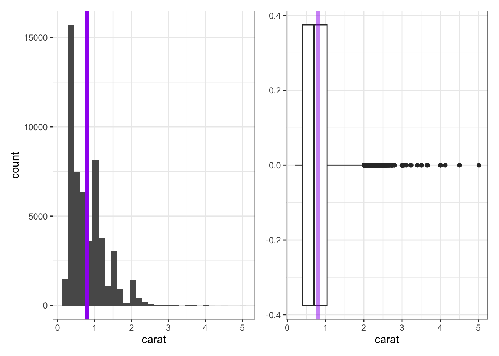

Topic 3: Descriptive Statistics for Numerical and Categorical Data (Spreadsheets)
About
This activity builds off of what we learned in the Topic 1 and Topic 2 activities. We’ll learn how to use spreadsheet software to analyse numeric and categorical data. We discuss and implement measures of central tendency and spread (including inquiry into robustness in the presence of outliers) for numerical data, and measures of frequency for categorical data.
Note. The button above resets multiple choice and checkbox questions. Currently, resetting answer entry cells must be done manually via hitting the Start Over button on each individual interactive cell.
Using a Spreadsheet Program
There are times throughout this activity where you’ll be asked to do work inside of your favorite spreadsheet program.
- If you are a Google Sheets user, click here to create a copy of the spreadsheet for this activity
- If you are an Excel user, click here to download a copy of the spreadsheet for this activity
Descriptive Statistics
Workbook Objectives: This workbook covers the following objectives.
- Compute and discuss appropriate summaries for both numerical and categorical data
- Regarding numerical variables, discuss the difference between mean and median as well as standard deviation and inter-quartile range. Identify when each measures are most appropriate for a given variable.
- Compute summary statistics both by hand and with the use of spreadsheet software
Important Reminders: We’ll use the following items from previous notebooks in this activity. Be sure to review before moving on if you need to.
- A variable is numerical if a summary statistic such as the mean has a meaningful interpretation.
- A variable is categorical if it serves to sort observations into different groups (categories).
- The unique values which a variable takes are called the levels of that variable.
- In a spreadsheet program, each cell location is identified by its column (a capital letter label) and its row number. For example, the cell
C5is in the third column (the one labeled byC) and the fifth row. - In a spreadsheet program, you reference a rectangular range of cells via
top_left:bottom_right. That is, the rangeA1:B4will access all of the cells in rows 1 - 4 of the first two columns of the spreadsheet. Similarly,C2:C101will access the hundred cells in theCcolumn starting from row 2 and ending at row 101.
Summarizing Numerical (Quantitative) Data
Recall: Variables for which computation of measures like the mean (average) or standard deviation are meaningful are numerical variables.
Measuring Central Tendency
Measures of Central Tendency (Averages): The mean and median both attempt to measure the center of a dataset.
The mean of a set of observations is the traditional average. We typically denote the mean by \(\bar{x}\) (or \(\mu\) in the case of population-level data) and it is computed as follows: \[\bar{x} = \frac{\displaystyle{\sum_{i=1}^{n}{x_i}}}{n} = \frac{x_1+x_2+x_3+\cdots+x_n}{n}\]
The median is the middle value for a set of observations. To compute the median, list the numbers in ascending order and find the number or numbers in the middle of the list. In the case that there is a single middle number, that is the median. In the case where there are two middle numbers, we take the mean of those two.
Comments on Spreadsheet Work
In order to keep things as simple as possible, I’ll have you compute summary statistics on the same sheet that your data appears.
As you become more comfortable with spreadsheet use, a better practice is to compute summary statistics on a separate sheet. Doing so requires that you add the sheet name to your ranges though – instead of writing =MAX(A1:A6), you’d be writing something like =MAX(my_data!A1:A6). Prefacing your range with my_data! tells the spreadsheet software that the data you want to work with is on the sheet/tab labeled my_data.
Example: The following are three random samples of carat values from the diamonds dataset. You can find this data on the CaratSamples tab of the workbook you copied/downloaded at the beginning of this activity. Use that sheet to complete the exercises that follow.
| Sample_One | Sample_Two | Sample_Three |
|---|---|---|
| 0.41 | 2.68 | 1.05 |
| 1.01 | 1.01 | 0.31 |
| 1.22 | 0.26 | 0.31 |
| 1.02 | 0.90 | 0.30 |
| 0.30 | 0.43 | 0.40 |
| 0.30 | 0.53 | 1.50 |
| 1.00 | 2.00 | 2.27 |
| 1.17 | 0.33 | 10.00 |
- Use your spreadsheet to compute the mean of
Sample_One“by hand” (without making use of a built-in spreadsheet function). Use an empty cell for your calculations. Enter your result below.
Hint 1
In a blank cell, type = and then add up all eight carat values from Sample One, separated by +. Then divide the whole sum by 8 by wrapping it in parentheses and appending /8.
Hint 2
Your formula should have the shape =(___ + ___ + ___ + ___ + ___ + ___ + ___ + ___) / 8, where each blank is one of the eight carat values from Sample One.
Hint 3
In a blank cell, type =(0.41+1.01+1.22+1.02+0.30+0.30+1.00+1.17)/8 and press Enter.
(0.41 + 1.01 + 1.22 + 1.02 + 0.30 + 0.30 + 1.00 + 1.17) / 8
(0.41 + 1.01 + 1.22 + 1.02 + 0.30 + 0.30 + 1.00 + 1.17) / 8
Labeling Cells
A spreadsheet having numerical values populated into cells without any context/labels isn’t very useful. Type a label into a neighboring cell to provide context to the values you compute.
For example, if you calculated this average in cell F4, then typing a meaningful label like avg_samp1 into cell F3 or E4 helps anyone viewing your spreadsheet (including future you) understand what is being done.
Spreadsheets make computing means and medians straightforward because they have many built-in functions that do so. You can compute the mean of a range of values using AVERAGE() and the median using MEDIAN(). For example, because the Sample Two values are in cells B2:B9 of the sheet you are working on, you could type =AVERAGE(B2:B9) to get the mean of Sample Two.
- Use
AVERAGE()to compute the mean ofSample_Three. Enter your result below.
Hint 1
In the linked spreadsheet, find the column containing Sample Three values. Click a blank cell and type =AVERAGE( followed by the range of Sample Three values, then ).
Hint 2
Sample Three occupies cells C2:C9 in the linked spreadsheet, so your formula should be =AVERAGE(C2:C9).
mean(c(1.05, 0.31, 0.31, 0.30, 0.40, 1.50, 2.27, 10))
mean(c(1.05, 0.31, 0.31, 0.30, 0.40, 1.50, 2.27, 10))- Use
MEDIAN()in your spreadsheet to compute the median of each of the three samples, then answer the question that follows.
Check Your Understanding: Measures of Center
What does your work above tell you about the mean and median as measures of central tendency?
- In our first notebook we saw that we can use sample data to make generalizations about populations for which the sample is representative. Answer the following questions with this in mind.
Check Your Understanding: Sampling and Validity I
Assuming that the samples of diamonds were taken randomly, which of the following claims is justified?
Check Your Understanding: Sampling and Validity II
Which of the following would result in improved estimates for the true mean carat weight of diamonds in our population? Select all that apply.
Aside: Entering Your Own Data
Sometimes the data you want to summarize isn’t in a pre-existing spreadsheet — you just have a short list of values to work with. In that case, you can type the values directly into a column of your spreadsheet and then apply functions to that range.
Consider the distributions of doors knocked on by two political campaign workers last week (Monday – Friday): \(\begin{array}{lcl} \text{Worker A} & : & 23,~24,~25,~26,~27\\ \text{Worker B} & : & 0,~15,~25,~35,~50\end{array}\)
Using the BlankSheet tab of your spreadsheet, type the five values for Worker A and the five values for Worker B into empty cells. Be sure to add labels so that you remember what these values are. Then use AVERAGE() and MEDIAN() to compute the mean and median for each worker. Enter your results in the cells below.
Worker A mean:
Hint 1
Type 23, 24, 25, 26, 27 into empty cells, using one value per cell. Then in a blank cell type =AVERAGE(range_start:range_end) and press Enter.
Hint 2 (Solved)
If you typed 23, 24, 25, 26, 27 into cells B2 through B6. Then in a blank cell type =AVERAGE(B2:B6) and press Enter.
mean(c(23, 24, 25, 26, 27))
mean(c(23, 24, 25, 26, 27))Worker A median:
Hint 1 (Solved)
In a blank cell, type =MEDIAN(B2:B6) and press Enter, assuming Worker A’s values are in B2:B6.
median(c(23, 24, 25, 26, 27))
median(c(23, 24, 25, 26, 27))Worker B mean:
Hint 1
Just like for Worker A, start by typing 0, 15, 25, 35, 50 into empty cells, using one value per cell. Make sure to include a label.
Hint 2
For organization purposes, it is a good idea to put these next to your values for Worker A.
Hint 3
In a new cell, type =AVERAGE(___:___) and fill in the blanks corresponding to the range where Worker B’s values are located.
Hint 4 (Solved)
Assuming that you’ve typed the values into cells C2:C6, then type =AVERAGE(C2:C6) and hit enter.
mean(c(0, 15, 25, 35, 50))
mean(c(0, 15, 25, 35, 50))Worker B median:
Hint 1
In a blank cell, type =MEDIAN(___:___), again filling in the blanks corresponding to the range where Worker B’s values are contained.
Hint 2 (Solved)
Assuming that Worker B’s values are in cells C2:C6, type =MEDIAN(C2:C6) into an empty cell and hit return.
Make sure you’re labeling all of these summary statistics!
median(c(0, 15, 25, 35, 50))
median(c(0, 15, 25, 35, 50))- Use your explorations of the means and medians for the campaign workers to answer the following question.
Check Your Understanding: Measures of Center
Which of the following are correct? Select all that apply.
Measuring Spread
Measures of Variability: Clearly, the center of a dataset doesn’t tell the entire story. Our two political campaign workers obviously have very different door-knocking strategies but both have a mean (and median) of 25 doors per day. We should also measure the spread of data.
The standard deviation of a set of observations is denoted by \(s\) (or \(\sigma\) in the case of population-level data) and is computed as follows: \[s = \sqrt{\frac{\displaystyle{\sum_{i=1}^{n}{\left(x_i-\bar{x}\right)^2}}}{n-1}}\]
We should also note that if you are certain that you are working with population-level data, then the denominator used to compute the standard deviation should be changed to \(N\) (the population size). We can do this because there is no uncertainty in estimating the population standard deviation if we have records from every element of the population. In our course, however, we’ll always assume that we are working with a subset of the population.
Explaining the Standard Deviation Formula: The standard deviation seeks to measure an “average deviation” from the mean.
- If we don’t look too closely at the formula, we can see the summation symbol \(\left(\sum\right)\) as well as division (by just about the number of values we’ve added up). That’s almost like an average!
- What are we averaging? The quantity \(\left(x - \bar{x}\right)\) denotes an observed value’s deviation from the mean. We shouldn’t average these values though, because since the mean sits in the center of the data we would have deviations above the mean (positive) “cancelling out” deviations below the mean (negative).
- We square the deviations which has two effects: (i) all of the squared deviations are now non-negative, so that no cancellation can occur, and (ii) large deviations from the mean carry a heavier weight in measuring the standard deviation.
- Since we squared the deviations before computing the “average”, the units of measure are no longer comparable to the original units that the variable was measured in — the units are square units now. This is why we see the large square root as the last piece of the formula — taking the square root brings us back to the original units.
The inter-quartile range (IQR) of a set of observations measures the spread of the “middle 50 percent” of the observations. The IQR is the distance between \(Q_1\) (the 25th percentile) and \(Q_3\) (the 75th percentile).
- Note that the median of a set of observations splits the set into two halves: an upper half and a lower half. The median of the lower half is called the first quartile (\(Q_1\)) while the median of the upper half is called the third quartile (\(Q_3\)). The interquartile range is the distance between \(Q_1\) and \(Q_3\). That is, \[IQR = Q_3 - Q_1\]
- Check your intuition about the standard deviation and interquartile range by answering the questions below.
Check Your Understanding: Measures of Spread I
Without carrying out the computations, which of the samples of diamonds has the largest standard deviation?
Check Your Understanding: Measures of Spread II
Which measure of spread is more greatly impacted by the presence of outliers?
The two plots below are a histogram (left) and a boxplot (right), each showing the distribution of carat weights for the diamonds in our population.

- The histogram does a nice job showing the true shape of the data, but does not always do a good job showing the presence of outliers. The purple line has been added to the histogram to show the true mean carat weight.
- The boxplot doesn’t show the detailed shape that the histogram does, but it does a great job showing the IQR, median, and any outliers present.
- The lone dots in the boxplot show any outliers (extending more than 1.5 times the IQR beyond \(Q_1\) or \(Q_3\)).
- The box in the boxplot shows the IQR — the left edge of the box is at \(Q_1\) and the right edge of the box is at \(Q_3\).
- The line through the middle of the box denotes the location of the median.
- The faded purple line shows the location of the mean carat weight. We can see the impact of those outliers pulling on the mean here.
A Note on Skew: It is common to refer to data as skewed if the presence of outliers causes the mean and median to disagree on the location of the “center” of the data. We say that the data is skewed in the direction that those outliers have pulled the mean. For example, we would say that the carat weight data above is skewed right.
Spreadsheets include built-in functions for computing standard deviations and quartiles. Use STDEV() for the sample standard deviation and QUARTILE() for quartiles. For example, the Diamonds tab in your spreadsheet contains the measurements on all 53,940 diamonds in the data set. The carat weights are contained in cells B2:B53941.
=STDEV(B2:B3941)computes the sample standard deviation.=QUARTILE(B2:B53941, 1)computes \(Q_1\) (the 25th percentile).=QUARTILE(B2:B53941, 3)computes \(Q_3\) (the 75th percentile).- The IQR is then
=QUARTILE(B2:B53941, 3) - QUARTILE(B2:B53941, 1), or you can compute \(Q_1\) and \(Q_3\) in separate cells and subtract them.
Try it now. Return to the CaratSamples tab of your spreadsheet. Compute the standard deviation and IQR for each of the three samples and record your results in a small summary table in your spreadsheet. You should see the following:
- Sample One: standard deviation: ~0.3960, IQR: ~0.675, Q1: ~0.3825, Q3: ~1.0575
- Sample Two: standard deviation: ~0.8761, IQR: ~0.8525, Q1: ~0.405, Q3: ~1.2575
- Sample Three: standard deviation: ~3.303, IQR: ~1.3825, Q1: ~0.31, Q3: ~1.6925
You can see the formulas necessary for these calculations on the CaratSamplesSummary tab of the spreadsheet you downloaded at the beginning of this activity.
Computing Multiple Summaries Efficiently
Rather than computing one summary at a time, you can set up a small summary table in your spreadsheet. For example, check out the CaratSamplesSummary tab in your workbook. To create that table, I
- typed in the row and column labels,
- typed
=AVERAGE(A1:A9)in cellF2and typed=MEDIAN(A1:A9)in cellF3(along with the other summary statistics in columnFsimilarly), - selected cells
F2throughF7, and - clicked on the bottom right of the cell selection and dragged it to the right in order to fill in the summary statistics for the other two samples.
Remark: Our third sample of diamond carat sizes contained an outlier (the value 10). Notice how dramatically this outlier affects the standard deviation compared to the IQR. Because the median and IQR are far less sensitive to extreme values, we say that they are robust statistics in the presence of outliers — the mean and standard deviation are not.
Now return to the campaign worker data you entered earlier. Use STDEV() and QUARTILE() to compute the standard deviation and IQR for each worker, and record your results alongside the means and medians you computed before.
Remark: Even though Workers A and B had the same mean and median, their standard deviations and IQRs differ substantially — confirming that measures of center alone are not sufficient to describe a dataset.
Summarizing Categorical (Qualitative, Factor) Data
Categorical data is best summarized using a frequency table — a table that lists how frequently each value occurred in the dataset. For example, consider the samples of diamond cuts below:
| Sample_One | Sample_Two | Sample_Three |
|---|---|---|
| Good | Ideal | Fair |
| Very Good | Good | Good |
| Ideal | Premium | Premium |
| Premium | Very Good | Premium |
| Premium | Premium | Ideal |
| Ideal | Premium | Good |
| Premium | Ideal | Very Good |
| Ideal | Premium | Ideal |
These cut samples are available on the CutSamples tab of the spreadsheet you’ve been working within. Summarizing categorical data is most often done via frequency tables (showing the number of times each category appears in the data set) and relative frequency tables (showing proporitons instead).
The most flexible way to produce frequency and relative frequency summaries in a spreadsheet is through a pivot table. A pivot table is a built-in tool that automatically groups and counts your data, and it generalizes naturally to grouped summaries that we’ll encounter in later activities.
Creating a Pivot Table
In Google Sheets:
- Click anywhere inside your data (for example, the Sample One cut column, including its header).
- Go to Insert → Pivot table. Choose to place it in a new sheet or an existing sheet.
- In the Pivot table editor on the right:
- Under Rows, click Add and select your column (e.g.
Sample_One). - Under Values, click Add, select the same column, and set Summarize by to
COUNTA.
- Under Rows, click Add and select your column (e.g.
- Your pivot table now shows the count of each cut category.
- To add a relative frequency column, click a blank cell next to your pivot table and divide each count by the total: for example, if the counts are in cells
B2:B6, then type the formula=B2/SUM(B$2:B$6). Use an absolute row reference on theSUMrange so it doesn’t shift when you fill the formula down.
In Excel:
- Click anywhere inside your data.
- Go to Insert → PivotTable. Choose where to place it and click OK.
- In the PivotTable Fields pane, drag your column name (e.g.
Sample_One) to both the Rows area and the Values area. - The Values area will default to
Count of Sample_One— that is what you want. - To add a relative frequency column, click a blank cell next to your pivot table and divide each count by the total: for example, if the counts are in cells
B2:B6, then type the formula=B2/SUM(B$2:B$6). Use an absolute row reference on theSUMrange so it doesn’t shift when you fill the formula down.
Try it now. Go back to your spreadsheet and create a pivot table summarizing the cut categories in Sample_One. Then add a relative frequency column. Repeat for Sample_Two and Sample_Three and compare the distributions across samples.
Below, we can see the distributions of diamond cut from Sample_Three (left) and from our entire population (right). Even with a sample of 8 diamonds, we gain some insight into the most and least common diamond cuts. You may also notice that the frequency and relative frequency plots look identical aside from the scale on the vertical axis — this will be the case in general.

We’ll see how to create plots like these in the next activity.
Submit
If you are part of a course with an instructor who is grading your work on these activities, please copy and submit both of the hashes below using the method your instructor has requested.
Question Hash
The hash below encodes your responses to the multiple choice and checkbox questions in this activity.
Exercise Hash
Click the button below to generate your exercise submission code. This hash encodes your work on the graded exercises in this activity.
You must have attempted the graded exercises before clicking — clicking generates a snapshot of your current results. If you have completed the activity over multiple sessions, please go back through and enter your answer in each graded exercise cell before generating the hash below, to ensure your most recent results are recorded.
Summary
Main Takeaways
- We can summarize numerical data using measures of central tendency and measures of spread (or variability).
- The mean (\(\bar{x}\) for samples, \(\mu\) for populations) and median measure the center of a set of numerical data.
- The standard deviation (\(s\) for samples, \(\sigma\) for populations) and interquartile range (\(IQR\)) measure the spread of a set of numerical data.
- The median and \(IQR\) are robust measures in the presence of outliers (unusually large or small values) — the mean and standard deviation are not.
- Categorical data is best summarized in a frequency table or relative frequency table, which can be constructed efficiently using a pivot table in Excel or Google Sheets.
Spreadsheet Functions Introduced
| What you want | Formula |
|---|---|
| Mean of a range | =AVERAGE(range) |
| Median of a range | =MEDIAN(range) |
| Sample standard deviation | =STDEV(range) |
| First quartile (\(Q_1\)) | =QUARTILE(range, 1) |
| Third quartile (\(Q_3\)) | =QUARTILE(range, 3) |
| Interquartile range | =QUARTILE(range, 3) - QUARTILE(range, 1) |
| Frequency / relative frequency table | Pivot table (Insert → Pivot table) |
Looking Ahead
In the next activity we’ll shift from summarizing data numerically to visualizing it. We’ll learn how to construct histograms, boxplots, and bar charts. In addition to syntax and structure, you’ll develop intuition for choosing the right visualization for a given variable type(s) and question.
References
[1] Wickham, H. (2016). ggplot2: Elegant graphics for data analysis [Diamonds Dataset]. Springer-Verlag New York. https://ggplot2.tidyverse.org/